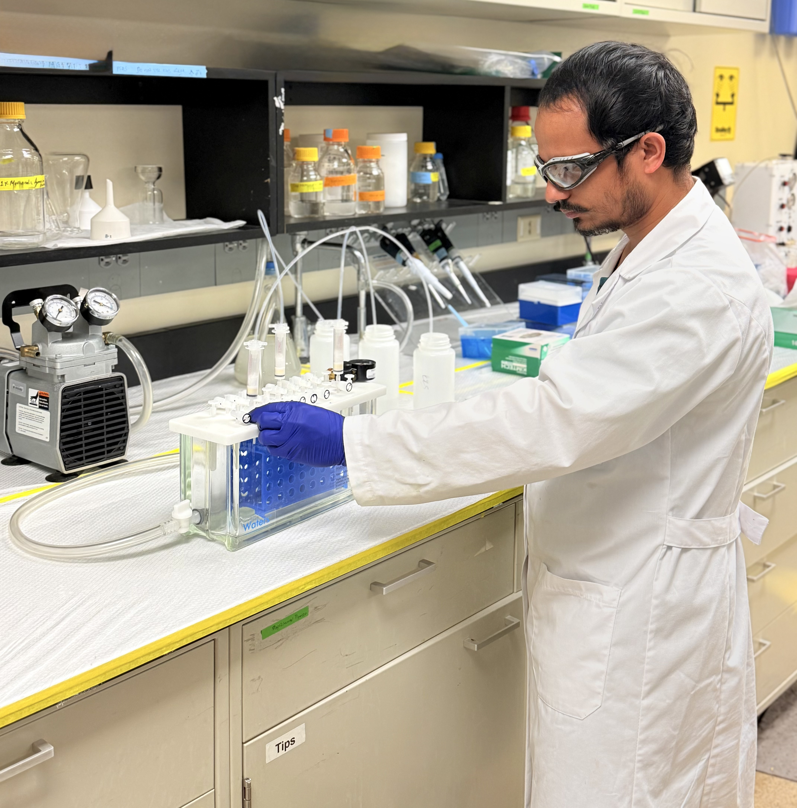

RT 03:40 — Research
Research Focus
Every objective below is something I'm trying to detect : a signal to pull out of the noise, whether that's a trace contaminant, a workable sorbent, or a protein hiding in a tissue matrix.

-
Push PFAS detection limits below the part-per-trillion floor: pairing fast-flow solid-phase extraction with UPLC-MS/MS to reveal contamination that conventional methods miss.
-
Find field-ready ways to pull PFAS out of contaminated water — evaluating zeolite sorbents and cyanobacteria toward regenerable, deployable remediation media.
-
Miniaturize sample prep for the field — building a pocket-sized device that brings EPA Priority 40 PFAS sample preparation out of the lab.
-
Quantify membrane proteins in biological tissue — using targeted UPLC-MRM proteomics to understand how contaminants and drugs move through the body.
Ultra-trace PFAS Detection
Fast-flow solid-phase extraction paired with UPLC-MS/MS to quantify PFAS in drinking water at sub-part-per-trillion detection limits — sensitive enough to see contamination most methods miss.
PFAS Remediation
Evaluating sorbents and cyanobacteria for pulling PFAS out of contaminated water, working toward regenerable, field-compatible treatment media.
Field-deployable Sample Preparation
A miniaturized and pocket-sized sample preparation device that brings EPA Priority 40 PFAS sample preparation out of the lab and into the field.
Bottom-up Proteomics and Small Molecule Analysis
Targeted proteomics in biological tissue and small moolecule analysis via UPLC-MRM, to understand the disposition of contaminants and drugs in the animal and human body.